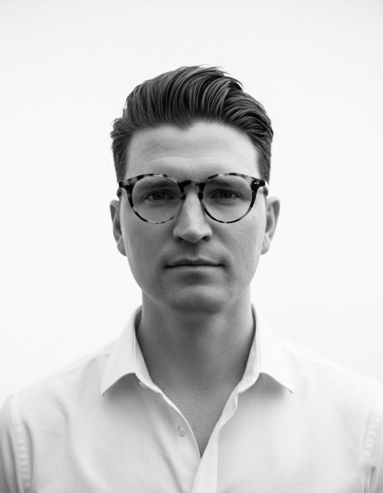

Jack Olivia is an independent structural engineering consultancy working across London and the South East. We work with architects, homeowners, developers and contractors on residential alterations, extensions, loft conversions, refurbishments and new-build homes.
Jack Olivia was established to bring this breadth of experience to a more personal form of structural engineering consultancy — working closely with architects and clients to develop structures that are considered as part of the architecture, rather than simply engineered around it.
Our work ranges from carefully considered interventions within existing buildings to substantial alterations and new-build structures, with each project receiving the same level of attention regardless of scale.
Read Peter's CV →We believe the best structural engineering begins with understanding the architecture.
We work collaboratively with architects from the earliest stages of a project, developing structural solutions that support the design intent while remaining efficient, buildable and proportionate.
Where possible, we look for simplicity — making intelligent use of the existing structure, avoiding unnecessary intervention and considering how structural decisions affect space, materials, cost and construction.
Our experience in property development also brings a practical perspective to the design process. We understand that a successful project must work beyond the drawing board, with careful consideration given to buildability, programme, budget and the realities encountered on site.
Communication is central to the way we work. We pride ourselves on responding quickly to enquiries and being accessible throughout a project. When unexpected conditions arise during construction, we understand that builders often need engineering input there and then — not several days later. We make it a priority to provide practical, timely advice that keeps projects moving.
As an independent consultancy, our clients, architects and contractors have direct access to Peter throughout their project, from the first conversation and structural design through to construction on site. This continuity means the engineer who understands the project is always the person you are speaking to.
The result is a structural engineering service that is considered, collaborative, responsive and practical — allowing good architecture to take priority while helping projects run smoothly through construction.

The practice is led by structural engineer Peter Manthorpe BEng (Hons) GIStructE, who brings over a decade of structural engineering and construction experience to each project.
Peter began his career at WSP, progressing from Graduate to Senior Structural Engineer and contributing to major London developments including London Wall Place and Keybridge House. He later moved into residential structural engineering and property development, gaining first-hand experience of the practical and commercial considerations involved in taking projects from design through to construction.
Read Peter's CV →